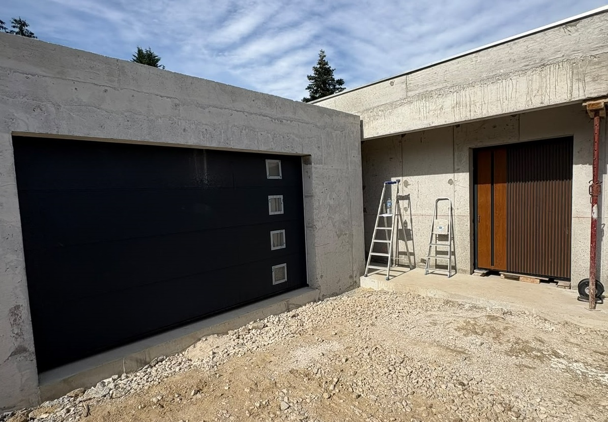
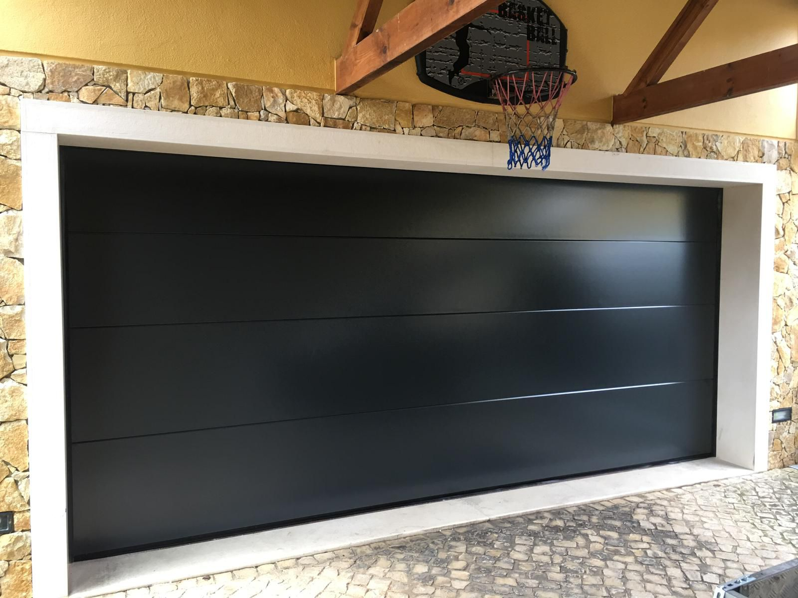
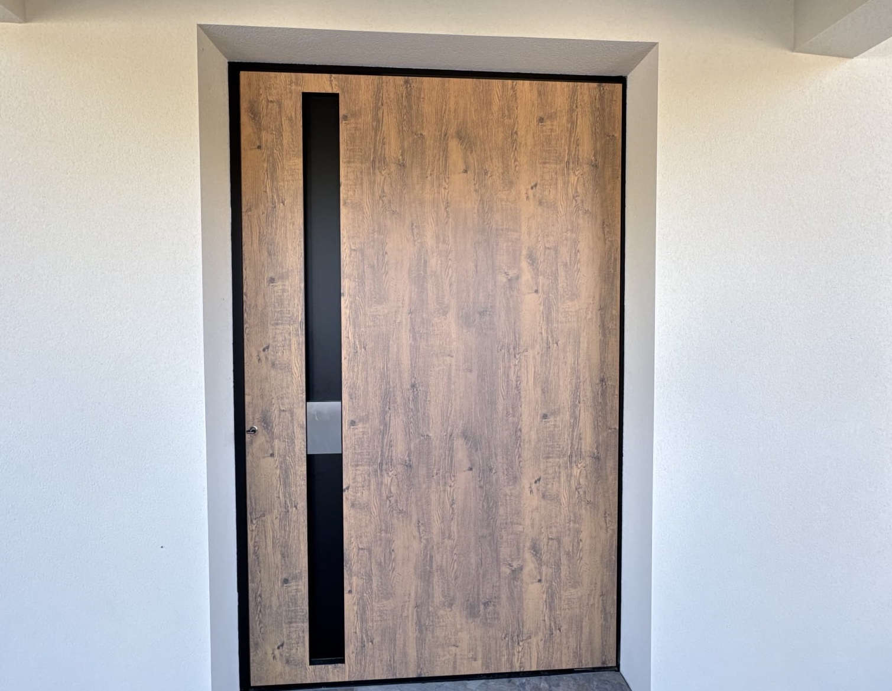

A2T Distributions intervient dans toute l'agglomération lorientaise — pose, remplacement et motorisation. Devis gratuit sous 24h.
Basés à Cléguér (ZA Kerchopine), à quelques minutes de Lorient, nous intervenons quotidiennement dans l'agglomération lorientaise — Lorient, Lanester, Hennebont, Ploemeur, Guidel. Nos équipes connaissent le tissu urbain local, les contraintes des lotissements et des maisons individuelles du Morbihan.
Lorient est notre terrain de jeu principal : plus de 50 chantiers réalisés dans la ville et ses communes limitrophes, des portes de garage sectionnelles aux portes d'entrée à pivot les plus spectaculaires.

Distributeur officiel Hörmann et Flexidoor en Morbihan, nous posons des portes de garage sectionnelles, basculantes et enroulables adaptées aux maisons lorientaises — constructions des années 70-90 comme aux maisons contemporaines de Kerpont ou Kervénanec.

Les façades contemporaines lorientaises — quartier de Keryado, résidences récentes de Ploemeur, maisons BBC de la périphérie — sont de plus en plus nombreuses à opter pour la porte à pivot Tehni. Un choix architectural fort qui marque la différence et résiste aux vents de la côte atlantique.

Devis gratuit et sans engagement. Réponse sous 24h, déplacement sous 48h sur l'agglomération lorientaise.
Demander mon devis gratuit →Siège A2T Distributions — zone industrielle Kerchopine, Cléguér. Délais les plus courts.
Chef-lieu Morbihan, golfe, résidences secondaires. À 50 km de Lorient.
Finistère, habitat breton traditionnel et neuf. À 65 km de Lorient.
Grand Finistère, conditions côtières. À 120 km de Lorient.